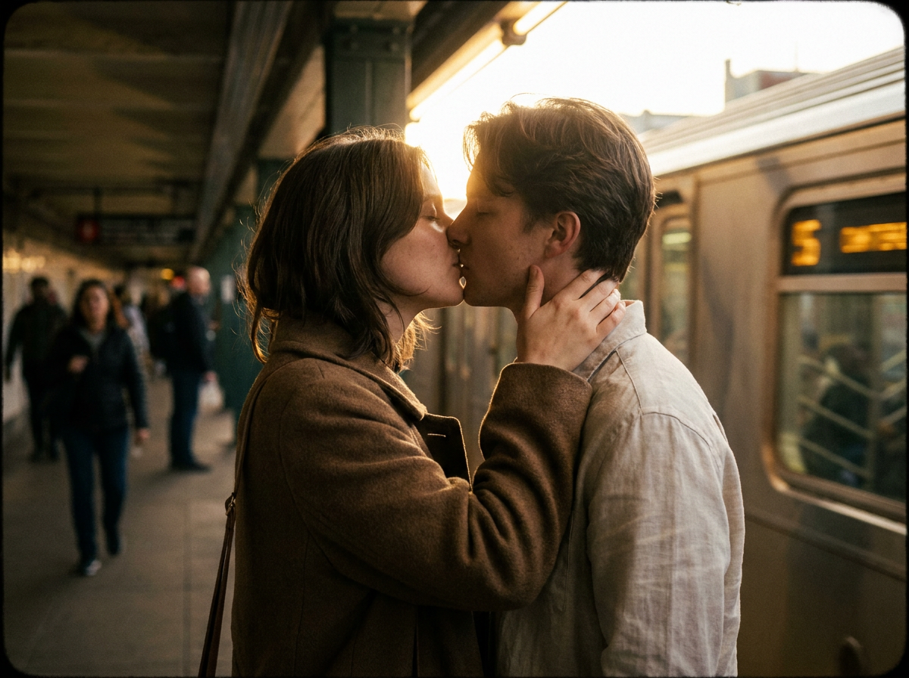
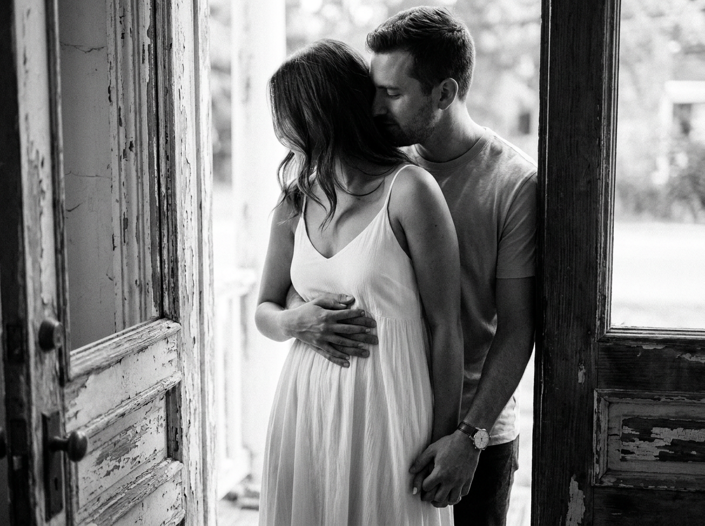
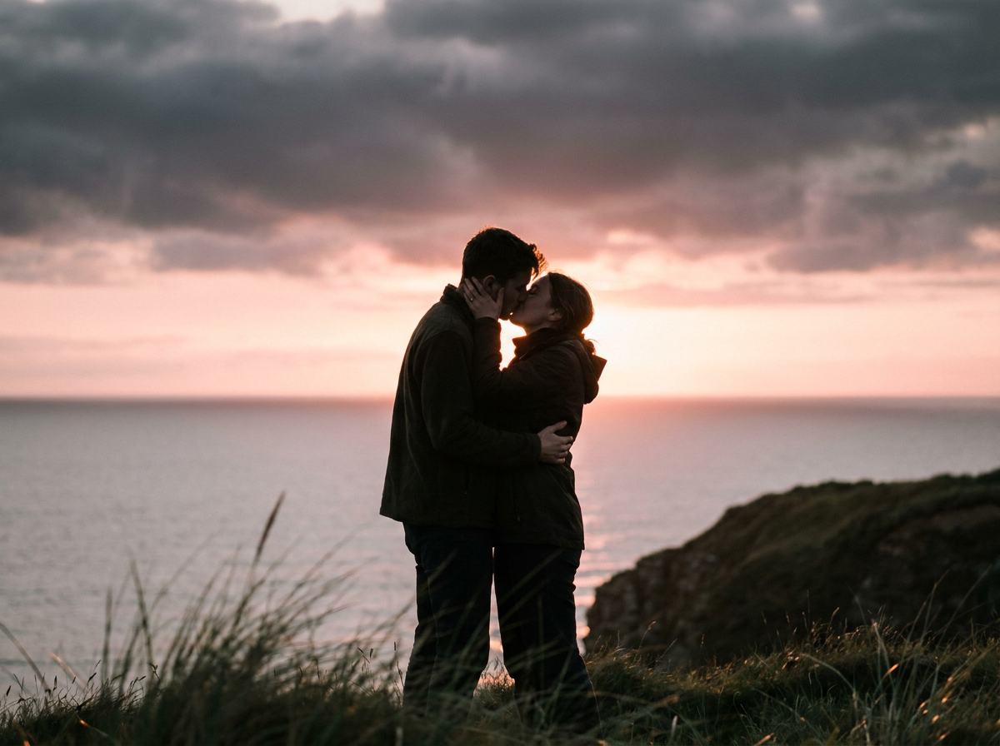
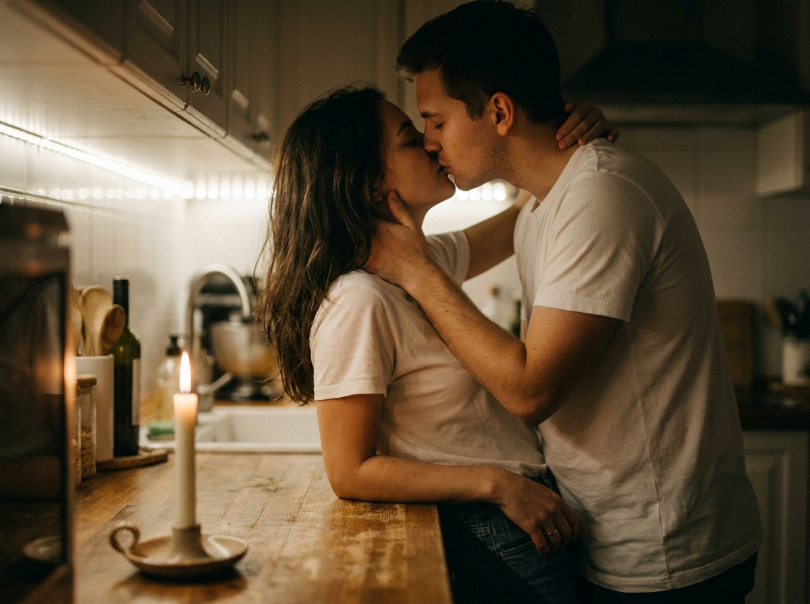
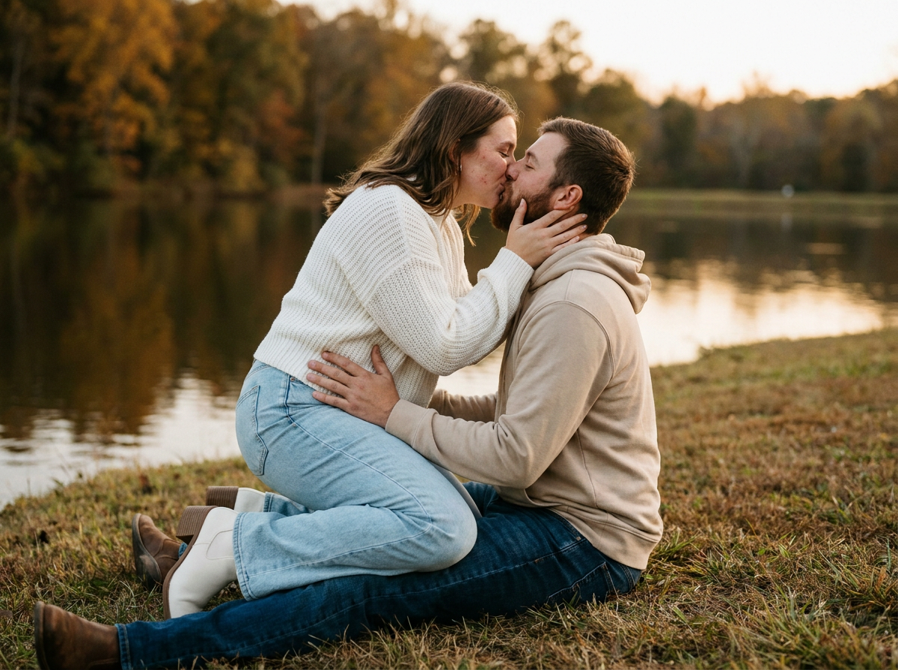
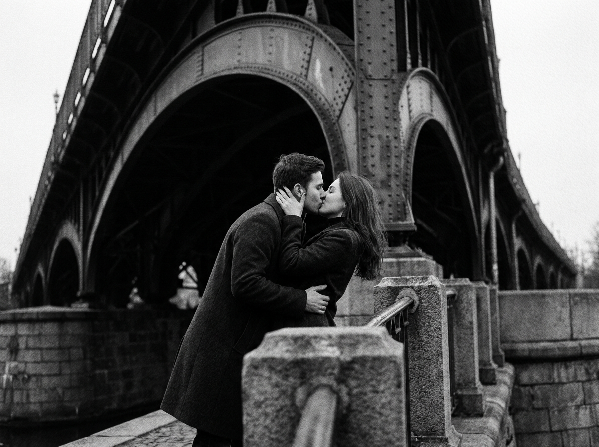
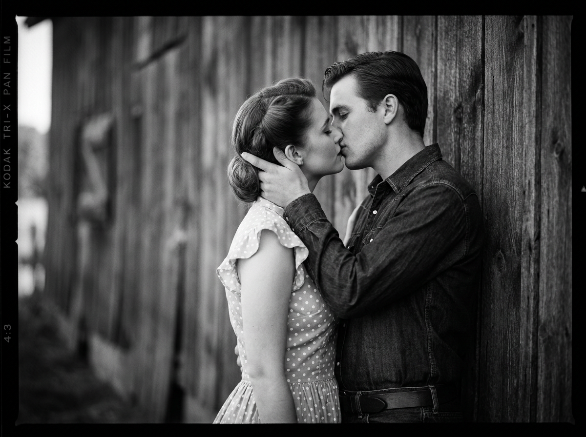
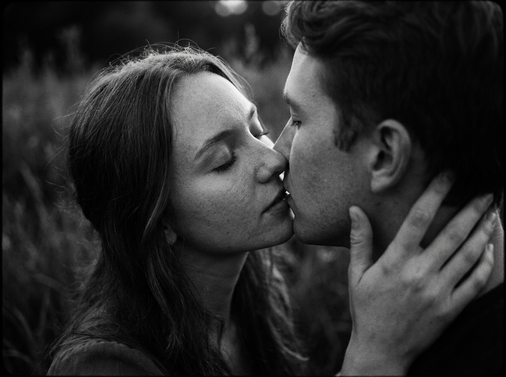
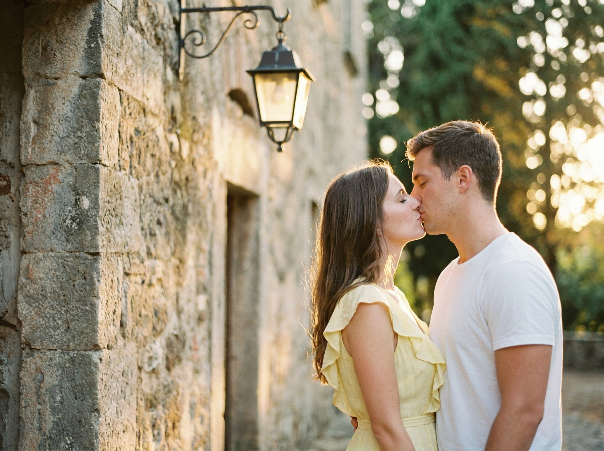
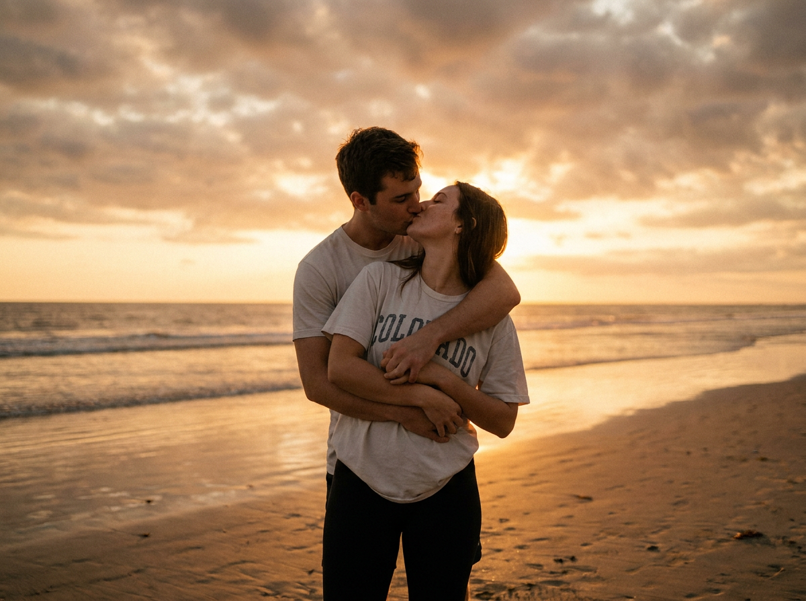

ИИ-фото поцелуя: 10 промптов для нейросети

Романтичный кадр с поцелуем сложно снять случайно: люди зажимаются, свет меняется, а фон отвлекает от эмоций. Генерация помогает заранее собрать нужную сцену — от мягкого домашнего света до драматичного заката у моря.
В подборке — 10 промптов для разных настроений и локаций: метро, кухня, берег озера, старинная стена, мост, пляж и винтажная съёмка в духе 1950-х. Каждый текст можно взять за основу и адаптировать под свои референсы.
Как сгенерировать такое фото: пошагово
Нужен снимок анфас при ровном свете, лицо в кадре целиком, без тёмных очков и головных уборов. Разрешение от 1000 пикселей по короткой стороне. Чем чётче исходник, тем точнее модель повторит черты.
Выберите сценарий ниже и нажмите «Копировать» — текст уйдёт в буфер целиком, вместе с командой сохранения внешности. Эта команда стоит первой строкой и отвечает за то, чтобы на выходе было ваше лицо, а не случайное.
Кнопка «Сгенерировать» рядом с каждым промптом открывает модель в новой вкладке. Nano Banana Pro работает с референсом лица — в отличие от моделей, которые генерируют портрет с нуля и узнаваемость теряют.
Промпт — в поле ввода, портрет — через загрузку референса. Порядок значения не имеет, но без референса команда сохранения внешности работать не будет: модели нечего сохранять.
Для сторис и ленты берите 9:16, для превью и обложек — 4:3. Первый результат редко идеален: если поза или свет ушли не туда, поправьте соответствующую часть промпта и запустите заново. Обычно хватает двух-трёх итераций.
10 промптов для генерации
1. Поцелуй на платформе
Строго сохранить внешность по загруженному референсу: черты лица, пропорции, мимику и текстуру кожи без изменений. Фотореалистичный кадр по пояс: молодая пара целуется на платформе метро, а проходящий поезд на заднем плане превращается в мягкое размытие. Лица находятся в центре внимания, между ними естественная близость, руки одного человека лежат на шее другого. На мужчине коричневое пальто и светлая рубашка. Атмосфера интимная, кинематографичная, с тёплой винтажной палитрой. Золотистый контровой свет очерчивает силуэты, тени остаются натуральными. Использовать неглубокую глубину резкости, мягкое боке, лёгкую плёночную зернистость и небольшой виньет. Объектив 50 мм, f/1.8, выдержка около 1/30 с, ISO примерно 800, резкость на лицах, реалистичные фактуры кожи и ткани, аккуратная тональная градация.
2. Танец у распахнутых дверей

Строго сохранить внешность по загруженному референсу: черты лица, пропорции, мимику и текстуру кожи без изменений. Вертикальная чёрно-белая фотография в фотореалистичном кинематографичном стиле. У широко открытых деревянных дверей молодой мужчина обнимает девушку со спины и нежно целует её в висок. Его грудь касается её спины, одна рука лежит на её талии, а второй он держит её ладонь, словно пара танцует медленный вальс. Девушка стоит спиной к камере, другой рукой придерживает его руку на животе. На ней лёгкое белое платье, на нём простая футболка и часы. Мягкий дневной свет с улицы скользит по лицам, создавая тёплые тени. Небольшая глубина резкости, вертикальная композиция, высокая контрастность, детальные фактуры ткани и дерева, тонкое плёночное зерно. Эстетика 35 мм, f/1.8, ISO 800, натуральная тональность и ностальгическое настроение.
3. Закат над морским утёсом

Строго сохранить внешность по загруженному референсу: черты лица, пропорции, мимику и текстуру кожи без изменений. Реалистичная вертикальная сцена на морском утёсе: молодая пара крепко обнимается и целуется на фоне спокойной воды, уходящей к горизонту. За силуэтами виден драматичный слой тёмных облаков, сквозь который пробивается розово-оранжевое закатное сияние. Одежда героев тёмная и естественная, поза интимная, без постановочной напряжённости. На переднем плане — слегка размытая морская трава. Контровой свет тонко прорисовывает контуры лиц и плеч, но сохраняет натуральную цветопередачу кожи и одежды. Применить малую глубину резкости, объектив 50 мм, диафрагму f/1.8, тёплый баланс белого, мягкий микроконтраст и едва заметное плёночное зерно. Кадр должен выглядеть как настоящая эмоциональная фотография, а не иллюстрация.
4. Тёплый поцелуй на кухне

Строго сохранить внешность по загруженному референсу: черты лица, пропорции, мимику и текстуру кожи без изменений. Уютная фотореалистичная сцена на кухне вечером: молодая пара целуется возле деревянной столешницы. Оба одеты в простые белые футболки, у девушки распущенные волосы. Парень мягко придерживает её за шею, поза естественная и доверительная, без лишней театральности. Черты лиц соответствуют загруженным референсам. Встроенная подсветка кухни и свеча на переднем плане дают низкое тёплое освещение, а пламя превращается в красивое мягкое боке. Резкость сосредоточена на лицах, фон заметно уходит в расфокус. Использовать малую глубину резкости, натуральные оттенки кожи, киношную тёплую цветовую палитру и лёгкую зернистость плёночного шума. Сохранить правдоподобные фактуры дерева, ткани и волос, спокойную домашнюю атмосферу и мягкие естественные тени.
5. Осенний поцелуй у озера

Строго сохранить внешность по загруженному референсу: черты лица, пропорции, мимику и текстуру кожи без изменений. Фотореалистичный тёплый кадр молодой пары на траве у осеннего озера. Девушка в белом вязаном свитере, светлых джинсах клёш и белых ботильонах сидит на коленях мужчины. На нём бежевая толстовка и синие джинсы. Они нежно целуются, её руки лежат на его лице и в районе талии, поза выглядит непринуждённой и близкой. Съёмка выполнена с низкого угла, лица остаются главной точкой фокуса. На заднем плане — спокойная гладь озера и осенние деревья, размытые малой глубиной резкости. Мягкий вечерний свет даёт естественную подсветку и золотистые края на одежде. Объектив 50 мм, f/1.8, натуральные тона, кинематографичная тёплая цветокоррекция, лёгкое плёночное зерно.
6. Под мостом на набережной

Строго сохранить внешность по загруженному референсу: черты лица, пропорции, мимику и текстуру кожи без изменений. Чёрно-белая реалистичная фотография в кинематографичном стиле: молодая пара страстно целуется на набережной под металлической аркой моста. Кадр по пояс снят с лёгким наклоном, а повторяющиеся линии конструкции направляют взгляд к лицам. В нижней части композиции видны грубые каменные перила переднего плана. На героях длинные шерстяные пальто, их поза естественная и интимная. Пасмурный рассеянный свет формирует мягкие тени, а контрастная тональная обработка подчёркивает объём и фактуры. Добавить выраженную плёночную зернистость, лёгкое боке и небольшую глубину резкости. Параметры съёмки: эквивалент 50 мм, f/1.8. Сохранить высокий динамический диапазон, натуральные жесты, ностальгическое настроение и плёночную тональную коррекцию.
7. Винтажный поцелуй у сарая

Строго сохранить внешность по загруженному референсу: черты лица, пропорции, мимику и текстуру кожи без изменений. Вертикальная винтажная фотография по пояс, выполненная в реалистичном чёрно-белом стиле. Молодые мужчина и женщина нежно целуются у деревянной стены сарая. Мужчина поддерживает её за затылок и чуть наклоняет голову девушки в сторону от камеры, создавая камерную тёплую позу. На нём тёмная джинсовая рубашка и заметный пояс, на ней светлое платье в мелкий горошек с рюшами и аккуратная причёска — одежда и детали выдержаны в эстетике 1950-х. Мягкий боковой свет подчёркивает лица, дерево и складки ткани. Высокая контрастность, тонкое зерно Kodak Tri-X, небольшая виньетка и малая глубина резкости. Съёмка на 35 мм, f/2.8, ISO 400. Композиция кинематографичная, эмоции нежные, фон не перетягивает внимание.
8. Крупный план нежности

Строго сохранить внешность по загруженному референсу: черты лица, пропорции, мимику и текстуру кожи без изменений. Крупный план эмоционального момента: молодая женщина наклоняется к мужчине и мягко касается его губ своими. Её рука бережно лежит на его шее, оба человека закрыли глаза, выражение лиц спокойное и наполненное близостью. Снять сцену как реалистичную чёрно-белую кинематографичную фотографию с мягким рассеянным естественным светом. Тени глубокие, но общий контраст невысокий, чтобы кожа и волосы сохраняли деликатную детализацию. На фоне травы — мягкое боке, резкость только на губах, глазах, пальцах и отдельных прядях волос. Использовать малую глубину резкости, эквивалент 50 мм, f/1.8, ISO около 800. Добавить натуральную текстуру кожи и волос, плёночную зернистость, тонкую виньетку и тихое ностальгическое настроение.
9. Золотой час у стены

Строго сохранить внешность по загруженному референсу: черты лица, пропорции, мимику и текстуру кожи без изменений. Фотореалистичный романтичный кадр во время золотого часа: молодая пара нежно целуется возле старинной каменной стены, рядом висит кованый фонарь. На девушке летящее жёлтое платье с рюшами, мужчина одет в простую белую футболку. Мягкий тёплый боковой контровой свет проходит по волосам, плечам и краям одежды, не пересвечивая лица. Фон растворяется в тонком боке, глубина резкости небольшая, фокус надёжно удерживается на паре. Поза естественная, жесты спокойные, между героями ощущается личная близость. Сохранить натуральные тёплые оттенки кожи, камня и ткани, лёгкую плёночную зернистость и аккуратную цветокоррекцию. Общий вид — кинематографичная фотография без чрезмерной глянцевости.
10. Поцелуй у зеркальной воды

Строго сохранить внешность по загруженному референсу: черты лица, пропорции, мимику и текстуру кожи без изменений. Реалистичная фотография молодой пары на пляже в момент заката. Герои находятся в центре композиции и целуются в объятиях: мужчина держит девушку сзади, она одета в светлую футболку с надписью "COLORADO" и чёрные леггинсы, на нём светлая футболка. Мягкий розово-оранжевый свет золотого часа одновременно падает сбоку и очерчивает фигуры сзади. Над водой раскинулось облачное небо с хорошо читаемой текстурой, влажный песок и спокойная поверхность моря отражают свет. Снимать на 50 мм при f/1.8, оставить небольшую глубину резкости, но сохранить узнаваемые отражения на переднем плане. Натуральные оттенки кожи, мягкое плёночное зерно, высокий динамический диапазон, правило третей и эмоциональная интимная атмосфера.
Что важно учесть в этом стиле
Поцелуй лучше описывать через конкретное действие: кто наклоняется, куда направлены руки, как стоят плечи и что происходит с корпусом. Это помогает нейросети собрать правдоподобную позу, а не случайное объятие с лишними пальцами.
Свет задаёт настроение сильнее, чем набор эпитетов. Для мягкого романтичного кадра укажите источник, направление и характер теней: контровой закат, рассеянный свет из окна или тёплую лампу на кухне. Объектив и диафрагма пригодятся для контроля фона, но не заменят описания композиции.
Идеи для вариаций
- Замените метро на пустой ночной вокзал с неоновыми указателями.
- Перенесите кухонную сцену на балкон с гирляндой и видом на дождливый город.
- Добавьте прозрачные зонты, мокрый асфальт и отражения фонарей.
- Сделайте версию в эстетике полароида с белой рамкой и датой внизу.
- Попросите нейросеть снять момент сразу после поцелуя: герои улыбаются и не размыкают объятия.
Как собрать свой промпт
Начните с формата кадра и главного действия, затем добавьте локацию, одежду, позу рук и выражения лиц. После этого опишите свет, фон, глубину резкости и цветовую обработку. Такая последовательность помогает не потерять детали.
Технические параметры лучше подбирать под задачу: 35 мм подойдёт для среды и архитектуры, 50 мм — для портрета по пояс, f/1.8 размоет фон. Если используете референс, отдельно укажите, какие черты нужно сохранить, а одежду и окружение опишите заново. Для сложной позы полезно сделать 4–8 генераций, а затем уточнить проблемный фрагмент.
Ошибки, из-за которых кадр не получается
- Слишком общая поза. Фраза «пара романтично целуется» не объясняет положение рук и корпуса, поэтому добавляйте физические действия.
- Смешение источников света. Свеча, жёсткий полуденный свет и холодный неон могут дать грязные оттенки кожи; задайте один главный источник.
- Перегруженный фон. Большое количество объектов спорит с лицами, поэтому ограничьте сцену несколькими заметными деталями.
- Нечитаемая надпись на одежде. Текст в генерации часто искажается: используйте короткие слова и будьте готовы исправить их отдельно.
- Слишком сильное размытие. При f/1.8 нейросеть может потерять часть лица или пальцы; уточните, что резкость должна оставаться на обоих лицах и руках.
Частые вопросы
Как сделать такое ИИ-фото бесплатно?
Для первых попыток подойдут Kandinsky и Шедеврум: они позволяют генерировать изображения без оплаты, но могут ограничивать число запросов, скорость и доступные настройки. В Krea AI и Arena.ai есть бесплатные режимы или пробный доступ, однако условия меняются. Работа с референсом зависит от конкретного инструмента: где-то доступна загрузка изображения, а где-то можно использовать только текстовое описание. Для чужих фотографий заранее получите согласие и не выдавайте сгенерированный кадр за настоящую съёмку.
Как сохранить лица по референсу?
Загрузите чёткие фотографии без сильных фильтров, если выбранный сервис поддерживает референсы. В промпте отдельно опишите сцену, одежду и свет, а не пытайтесь пересказать внешность длинным списком. Для стабильности используйте один и тот же референс, умеренную степень его влияния и несколько генераций.
Почему нейросеть искажает руки во время поцелуя?
Сложные перекрытия пальцев, шеи и лица часто сбивают модель. Упростите жест: опишите одну руку на талии, вторую на плече или шее, а затем сделайте 4–8 вариантов. Помогают крупный план, хорошее освещение и последующая дорисовка кистей встроенным редактором.
Как получить именно чёрно-белый винтажный кадр?
Укажите не только «чёрно-белое фото», но и характер изображения: плёночное зерно, мягкий боковой свет, тональную контрастность, виньетку, конкретную плёнку или съёмку на 35 мм. Не добавляйте яркие цветовые акценты, если нужен монохром. Для ретроэффекта также опишите одежду, причёски и фактуру фона соответствующей эпохи.